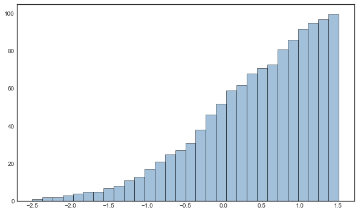

1. 误差线
import numpy as np
import matplotlib.pyplot as plt
plt.style.use('seaborn-white')
%matplotlib inline
误差线可以通过 plt.errorbar() 函数来创建：
plt.errorbar(x,
y,
yerr=None,
xerr=None,
fmt='',
ecolor=None,
elinewidth=None,
capsize=None,
capthick=None
)
主要参数：
x,y: 列表，数据点的位置坐标xerr,yerr: 标量或列表，数据的误差范围fmt: 数据点的标记样式以及相互之间连接线样式，与plt.plot的缩写代码一致ecolor: 误差棒的线条颜色elinewidth: 误差棒的线条粗细capsize: 误差棒边界横杠的大小capthick: 误差棒边界横杠的厚度ms: 数据点的大小mfc: 数据点的颜色mec: 数据点边缘的颜色
x = np.linspace(0, 10, 50)
dy = 0.8
y = np.sin(x) + 0.5 * x + dy * np.random.randn(50)
plt.figure(figsize=(8,6))
plt.errorbar(
x, y,
yerr= 0.1 * y,
fmt='xr',
ecolor='k',
elinewidth=1,
capsize=3,
capthick=1
)
<ErrorbarContainer object of 3 artists>
设置参数 yerr/xerr 为列表的列表，可以分别设置每个散点的下置信度与上置信度：
x=np.linspace(0.1,0.5,10) # 生成[0.1,0.5]等间隔的十个数据
y=np.exp(x)
error=0.05+0.5*x # 误差范围函数
error_range=[error*0.3, error] # 下置信度和上置信度
plt.figure(figsize=(8,6))
plt.errorbar(
x, y,
yerr=error_range,
fmt='or:',
linewidth=1.5,
ecolor='gray',
elinewidth=1,
capsize=3
)
<ErrorbarContainer object of 3 artists>
2. 等高线图
Matplotlib 提供三个函数绘制等高线图：
plt.contour画等高线图plt.contourf画带有填充色的等高线图plt.imshow显示图形
2.1 plt.contour
plt.contour 函数如下：
plt.contour([X, Y,] Z, [levels], **kwargs)
X,Y：表示的是坐标位置（这里是可选的，但是如果不传入的话就是python根据传入的高度数组(Z)的大小自动生成的坐标）-
X,Y可以是二维数组，可以使用np.meshgrid函数从两个一维数组生产二维数组；
-
X,Y也可以是一维数组，这就需要在生产 Z 的时候利用 numpy 矢量运算广播升维。
Z：代表每个坐标对应的高度值，是一个二维数组levels：有两种传入形式。一种是传入一个整数 n，Matplotlib 将数据范围分为 n 份。另一种方式就是传入一个包含高度值的一维数组，这样 Matplotlib 便会画出传入的高度值对应的等高线。- 其余的参数还有
colors,cmap,linewidths,linestyles：当图形中只有一种颜色时，默认使用虚线表示负数。
def f(x, y):
z = np.sin(x) ** 10 + np.cos(10 + y * x) * np.cos(x)
return z
x = np.linspace(0, 5, 50)
y = np.linspace(0,5, 50)
X, Y = np.meshgrid(x, y)
Z = f(X, Y)
plt.figure(figsize=(8,6))
plt.contour(
X, Y, Z,
levels=10,
colors='black',
linewidths=1
)
<matplotlib.contour.QuadContourSet at 0x7fafd0a1a100>
Z = f(x, y[:, np.newaxis])
plt.figure(figsize=(8,6))
plt.contour(
x, y, Z,
levels=20,
cmap=plt.cm.BrBG,
linewidths=1
)
<matplotlib.contour.QuadContourSet at 0x7fb001139d90>
若要生成数据标签，可以使用 plt.clabel 函数：
plt.figure(figsize=(8,6))
contour = plt.contour(
X, Y, Z,
3, colors='k',
linewidths=1
) # 此时等高线图已经画出来了
plt.clabel(contour, inline=True, fontsize=8)
<a list of 18 text.Text objects>
2.2 plt.contourf
plt.contourf 的语法与 plt.contour 一致。另外可以通过 plt.colorbar 自动创建一个颜色条，若要给颜色条加标签有两种方式：
plt.colorbar(label='content')cb = plt.colorbar(); cb.set_label('content')
plt.figure(figsize=(8,6))
plt.contourf(
X, Y, Z,
10,
cmap=plt.cm.winter,
linewidths=1
)
plt.colorbar(label='content')
<ipython-input-11-e732fb4df579>:2: UserWarning: linewidths is ignored by contourf
plt.contourf(
<matplotlib.colorbar.Colorbar at 0x7fafd0e167f0>
这样画出的图不够流畅，虽然可以通过设置 levels 参数来提高连续的程度，但是会使得图形性能下降。为此可以通过 plt.imshow 函数来处理。
plt.figure(figsize=(8,6))
plt.contourf(
X, Y, Z,
100,
cmap=plt.cm.winter,
linewidths=1
)
plt.colorbar()
<ipython-input-12-6105d2bad5ce>:2: UserWarning: linewidths is ignored by contourf
plt.contourf(
<matplotlib.colorbar.Colorbar at 0x7fb0012ca160>
2.3 plt.imshow
函数参数如下：
plt.imshow(
X,
cmap=None,
norm=None,
aspect=None,
interpolation=None,
alpha=None,
vmin=None,
vmax=None,
origin=None,
extent=None,
shape=None,
filternorm=1,
filterrad=4.0,
imlim=None,
resample=None,
url=None,
*,
data=None,
**kwargs,
)
重点强调几个参数
X：即是 $Z=f(X, Y)$ 中的 $Z$；extent：plt.imshow()不支持 x 轴和 y 轴的数据格式网格，必须通过extent=[xmin, xmax, ymin, ymax]参数设置图形坐标范围；origin：plt.imshow()默认使用标准的图形数组定义，即原点在左上角，设置参数origin=lower使原点位于左下角；aspect：控制轴的纵横比；interpolation：使用的插值方法，支持的值有：’none’, ‘nearest’, ‘bilinear’, ‘bicubic’,’spline16′, ‘spline36’, ‘hanning’, ‘hamming’, ‘hermite’, ‘kaiser’, ‘quadric’, ‘catrom’, ‘gaussian’, ‘bessel’, ‘mitchell’, ‘sinc’,’lanczos’.
plt.figure(figsize=(8,6))
plt.imshow(
Z,
extent=[0, 5, 0, 5],
origin='lower',
cmap=plt.cm.YlGn,
)
plt.colorbar()
plt.axis('tight')
(0.0, 5.0, 0.0, 5.0)
plt.figure(figsize=(8,6))
plt.imshow(
Z,
extent=[0, 8, 0, 6],
origin='lower',
cmap=plt.cm.YlGn,
interpolation='lanczos'
)
plt.colorbar()
<matplotlib.colorbar.Colorbar at 0x7fafe0ffd4f0>
还可以结合等高线图与彩色图：
plt.figure(figsize=(8,6))
contour = plt.contour(
X, Y, Z,
3, colors='k',
linewidths=1
)
plt.clabel(contour, inline=True, fontsize=8)
plt.imshow(
Z,
extent=[0, 5, 0, 5],
origin='lower',
cmap=plt.cm.YlGn,
interpolation='bilinear'
)
plt.axis('tight')
plt.colorbar()
<matplotlib.colorbar.Colorbar at 0x7fb0014f0af0>
在 Scikit-Learn 模块中有一份 8×8 手写数字的缩略图，每个数字都由 8×8=64 像素的色相构成：
from sklearn.datasets import load_digits
digits = load_digits(n_class=6)
print(digits.keys())
print(digits.images.shape)
print(digits.images[0])
dict_keys(['data', 'target', 'frame', 'feature_names', 'target_names', 'images', 'DESCR'])
(1083, 8, 8)
[[ 0. 0. 5. 13. 9. 1. 0. 0.]
[ 0. 0. 13. 15. 10. 15. 5. 0.]
[ 0. 3. 15. 2. 0. 11. 8. 0.]
[ 0. 4. 12. 0. 0. 8. 8. 0.]
[ 0. 5. 8. 0. 0. 9. 8. 0.]
[ 0. 4. 11. 0. 1. 12. 7. 0.]
[ 0. 2. 14. 5. 10. 12. 0. 0.]
[ 0. 0. 6. 13. 10. 0. 0. 0.]]
digits.images[0]是digits.images中的第一张手写数字的缩略图，可以看到该数字由64 个色相构成，因此该数字可以看为一个位于 64 维空间中的一点，每个维度表示一个像素的亮度。这是一种图形的编码方式，我们可以通过 plt.imshow() 函数将该图像解析出来：
plt.figure(figsize=(8,6))
plt.imshow(digits.images[0])
<matplotlib.image.AxesImage at 0x7fca1962ed60>
可以看出，这个数字是 0
3. 直方图与分布密度
3.1 一维直方图
可以使用 plt.hist 绘制一维直方图：
plt.hist(
x,
bins=None,
range=None,
density=False,
weights=None,
cumulative=False,
bottom=None,
histtype='bar',
align='mid',
orientation='vertical',
rwidth=None,
log=False,
color=None,
label=None,
stacked=False,
*,
data=None,
**kwargs,
)
强调几个参数：
x: 作直方图所要用的数据，必须是一维数组；多维数组可以先进行扁平化再作图；必选参数；bins: 直方图的柱数，即要分的组数，默认为10；range：元组(tuple)或None；剔除较大和较小的离群值，给出全局范围；如果为None，则默认为(x.min(), x.max())；即x轴的范围；cumulative：布尔值；如果为True，则计算累计频数；如果normed或density取值为True，则计算累计频率；align：{‘left’, ‘mid’, ‘right’}；‘left’：柱子的中心位于bins的左边缘；‘mid’：柱子位于bins左右边缘之间；‘right’：柱子的中心位于bins的右边缘；histtype：{‘bar’, ‘barstacked’, ‘step’, ‘stepfilled’}；‘bar’是传统的条形直方图；‘barstacked’是堆叠的条形直方图；‘step’是未填充的条形直方图，只有外边框；‘stepfilled’是有填充的直方图；当histtype取值为’step’或’stepfilled’，rwidth设置失效，即不能指定柱子之间的间隔，默认连接在一起；orientation：{‘horizontal’, ‘vertical’}：如果取值为horizontal，则条形图将以y轴为基线，水平排列；简单理解为类似bar()转换成barh()，旋转90°；rwidth：标量值或None。柱子的宽度占bins宽的比例；log：布尔值。如果取值为True，则坐标轴的刻度为对数刻度；如果log为True且x是一维数组，则计数为0的取值将被剔除，仅返回非空的(frequency, bins, patches）；label：字符串（序列）或None；有多个数据集时，用label参数做标注区分；edgecolor: 直方图最外层边框颜色；patches：返回每个bin里面包含的数据，是一个list。
data = np.random.randn(100)
plt.figure(figsize=(10,6))
plt.hist(
data,
bins=30,
# normed=True,
alpha=0.5,
histtype='bar',
color='steelblue',
edgecolor='k',
cumulative=True
)
(array([ 1., 2., 2., 3., 4., 5., 5., 7., 8., 11., 13.,
17., 21., 25., 27., 31., 38., 46., 52., 59., 62., 68.,
71., 73., 81., 86., 92., 95., 97., 100.]),
array([-2.50365446, -2.36995558, -2.2362567 , -2.10255781, -1.96885893,
-1.83516004, -1.70146116, -1.56776228, -1.43406339, -1.30036451,
-1.16666562, -1.03296674, -0.89926786, -0.76556897, -0.63187009,
-0.49817121, -0.36447232, -0.23077344, -0.09707455, 0.03662433,
0.17032321, 0.3040221 , 0.43772098, 0.57141986, 0.70511875,
0.83881763, 0.97251652, 1.1062154 , 1.23991428, 1.37361317,
1.50731205]),
<BarContainer object of 30 artists>)

x1 = np.random.normal(0, 1, 5000)
x2 = np.random.normal(3, 2, 5000)
x3 = np.random.normal(-2, 1.5, 5000)
param = {
'histtype': 'stepfilled',
'alpha': 0.3,
'bins': 40,
'edgecolor': 'r'
}
plt.figure(figsize=(8,6))
plt.hist(x1, **param, color='r')
plt.hist(x2, **param, color='g')
plt.hist(x3, **param, color='b')
(array([ 6., 1., 6., 13., 14., 27., 53., 41., 72., 111., 133.,
200., 205., 264., 294., 299., 372., 391., 370., 395., 316., 316.,
248., 202., 190., 129., 104., 75., 53., 41., 23., 16., 9.,
4., 1., 3., 2., 0., 0., 1.]),
array([-7.03486692, -6.75292275, -6.47097857, -6.18903439, -5.90709022,
-5.62514604, -5.34320187, -5.06125769, -4.77931351, -4.49736934,
-4.21542516, -3.93348098, -3.65153681, -3.36959263, -3.08764846,
-2.80570428, -2.5237601 , -2.24181593, -1.95987175, -1.67792757,
-1.3959834 , -1.11403922, -0.83209505, -0.55015087, -0.26820669,
0.01373748, 0.29568166, 0.57762584, 0.85957001, 1.14151419,
1.42345837, 1.70540254, 1.98734672, 2.26929089, 2.55123507,
2.83317925, 3.11512342, 3.3970676 , 3.67901178, 3.96095595,
4.24290013]),
[<matplotlib.patches.Polygon at 0x7fb021b1a9d0>])

若不想画图显示，只想计算频次，则可以用 np.histogram 函数：
counts, bin_edges = np.histogram(x1, bins=5)
print(counts, '\n', bin_edges)
[ 40 305 470 168 17]
[-3.16196772 -1.80581128 -0.44965484 0.90650161 2.26265805 3.6188145 ]
3.2 二维直方图
可使用 plt.hist2d 函数绘制二维直方图。首先创建一个二元高斯分布样本，其中 x, y 均为二维数组：
mean = [0, 0]
cov = [
[1, 1],
[1, 2]
]
x, y = np.random.multivariate_normal(mean, cov, 10000).T
plt.figure(figsize=(8,6))
plt.hist2d(
x, y,
bins=50, # nx=ny=bins
cmap=plt.cm.Blues
)
cb = plt.colorbar()
cb.set_label('counts in bin')
如果只希望计算结果而不显示图形则可以使用 np.histogram2d 函数：
counts, xedges, yedges = np.histogram2d(x, y, bins=[50, 60]) # nx=50, ny=60
print(counts, '\n', xedges, '\n', yedges)
[[0. 0. 0. ... 0. 0. 0.]
[0. 0. 0. ... 0. 0. 0.]
[0. 0. 0. ... 0. 0. 0.]
...
[0. 0. 0. ... 0. 0. 0.]
[0. 0. 0. ... 0. 0. 1.]
[0. 0. 0. ... 0. 0. 0.]]
[-3.88857568 -3.72687381 -3.56517195 -3.40347008 -3.24176822 -3.08006635
-2.91836449 -2.75666262 -2.59496076 -2.43325889 -2.27155703 -2.10985516
-1.9481533 -1.78645143 -1.62474956 -1.4630477 -1.30134583 -1.13964397
-0.9779421 -0.81624024 -0.65453837 -0.49283651 -0.33113464 -0.16943278
-0.00773091 0.15397095 0.31567282 0.47737468 0.63907655 0.80077841
0.96248028 1.12418215 1.28588401 1.44758588 1.60928774 1.77098961
1.93269147 2.09439334 2.2560952 2.41779707 2.57949893 2.7412008
2.90290266 3.06460453 3.22630639 3.38800826 3.54971012 3.71141199
3.87311386 4.03481572 4.19651759]
[-4.94009168 -4.75480949 -4.56952729 -4.38424509 -4.1989629 -4.0136807
-3.82839851 -3.64311631 -3.45783412 -3.27255192 -3.08726972 -2.90198753
-2.71670533 -2.53142314 -2.34614094 -2.16085874 -1.97557655 -1.79029435
-1.60501216 -1.41972996 -1.23444776 -1.04916557 -0.86388337 -0.67860118
-0.49331898 -0.30803678 -0.12275459 0.06252761 0.2478098 0.433092
0.6183742 0.80365639 0.98893859 1.17422078 1.35950298 1.54478517
1.73006737 1.91534957 2.10063176 2.28591396 2.47119615 2.65647835
2.84176055 3.02704274 3.21232494 3.39760713 3.58288933 3.76817153
3.95345372 4.13873592 4.32401811 4.50930031 4.69458251 4.8798647
5.0651469 5.25042909 5.43571129 5.62099348 5.80627568 5.99155788
6.17684007]
可以使用 plt.hexbin 函数画六边形二维直方图：
plt.figure(figsize=(8,6))
plt.hexbin(
x, y,
gridsize=30,
cmap=plt.cm.Blues,
)
plt.colorbar(label='counts in bin')
plt.axis('tight')
(-4.247995571840621, 4.299372584500895, -6.704709574740832, 5.564158846057719)